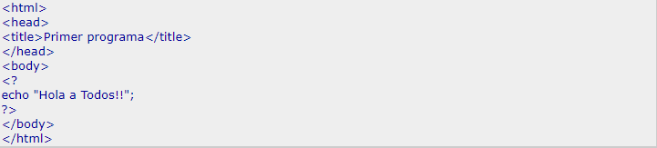

PHP
Sintaxis del lenguaje de programación PHP
Delimitadores
Para delimitar el código de PHP existen 4 opciones:
<? echo 'primer método de delimitador PHP'; ?>
<?php echo 'segundo método de delimitador PHP'; ?>
<script language="php">
echo 'Algunos editores como el FrontPage entienden este método;
</script>
<% echo 'Método de compatibilidad con ASP'; %>
Nota:
La opción 1 y 4 no estarán disponibles, ya que se pueden activar o desactivar al compilar el interprete de PHP. De esta forma la opción más usada es la segunda.
Comentarios
Php soporta 3 tipos de comentarios:
/* Comentarios de varias líneas */
// Comentraios de una sóla línea
# Comenrios estilo Bash / Perl (Hasta el final de línea)
Varibales
En PHP las variables se representan con un signo dolar seguido por el nombre de la variable.
Éstas no necesitan ser deaclaradas antes de ser usadas, sino que tras la primera aparición en el código quedan declaradas.
Además se debe tener en cuenta que las variables en PHP están débilmente tipadas, o sea que una variable se asocia a un contenido, del tipo que sea, estando el tipo indicado en el contenido, no en la variable en sí.
En PHP existen 2 formas de asignar variables:
Por valor : Si yo asigno una variable a otra, y más tarde cambio alguna de las variables, la otra no se me afecta.
Por referencia : (Es hacer un alias de una variable)Despues de hacer el alias, si yo cambio el contenido de una de las variables, la "otra" se me afecta.
Para colocar un alias coloco el símbolo '&' antes de la variable que voy a asignar, asi:
$var1 = 34; //var1 tiene 34
$var2 = &var1; //var2 tiene 34
$va1 = 27 //Las 2 variables cambian a 27.
Nota : Para eliminar una de estas variables, lo puedo hacer con unset($var1), por ejemplo.
Tipo de variables
Como ya se había dicho, en PHP las variables toman el tipo de acuerdo a su contenido, por ejemplo:
$var = 'Esto es una cadena' // Tipo String
$var = 3 Tipo entero
Nota : La suma obliga a que el tipo sea entero o doble según el operando, por ejemplo
Nombres de las Variables
En PHP podemos acceder al contenido de una variable cuyo nombre lo tenemos almacenado en otra variable diferente, por ejemplo:
$a = 23;
$b = 'a' ;
echo $$b; //mostrará 123
echo $b; // mostrará a
Variables predefinidas
Las variables dependen del servidor y su configuración. Estas variables están definidas por defecto al correr PHP como módulo Apache(En el manual de referencia encontrará información sobre esta forma de instalación).
Además si usted desea observar toda la configuración y las variables de acuerdo al servidor puede correr la función phpinfo().
Las siguientes son algunas de las variables que son propias del Apache, y otras propias de PHP.
Para más información puede dirigirse al manual de referencia en donde encontrará documentadas muchas más variables.
PHP
$PHP_SELF : El nombre del archivo que contiene el script que se esta ejecutando, relativo al directorio raíz de los documentos.
Si PHP se está ejecutando como intérprete de línea de comandos, esta variable no está disponible.
$HTTP_GET_VARS : Un array asociativo de variables pasadas al script actual mediante el método HTTP GET. Sólo está disponible si --variable tracking--
ha sido activado mediante la directiva de configuración track_vars o la directiva .
$HTTP_POST_VARS: Un array asociativo de variables pasadas al script actual mediante el método HTTP POST. Sólo está disponible si --variable tracking--
ha sido activado mediante la directiva de configuración track_vars o la directiva .
Estructura del lenguaje de programación PHP
Ejemplo

A que tipo de paradigma pertenece?
El lenguaje PHP es un ejemplo del paradigma de programación Multiparadigma
Aplicación a descargar para editar y ejecutar
Se puede descargar el compilador oficial de PHP en el siguiente link: Aqui
Ejemplo de programa
Factorial de N
1 <?php
2 $num1 = $_POST[" num1 "] ;
3 echo 'El factorial del numero: '. $num1 ;
4 function obtener_factorial($mi_fatorial) {
6 if ($mi_fatorial == 1)
7 return 1;
8 else
9 return $mi_fatorial * obtener_factorial($mi_fatorial-1);
9 }
9 ?>